GLOBAL PLACEMENT
MEDIAEVAL 2025
CHENNAI, INDIA · CSE @ SSNCE
Build beyond
the ordinary.
I'm Vishwajith. I build systems that connect models, APIs, and infrastructure to solve real problems. Strong in machine learning, applied AI, and system design, I take projects from idea to reliable delivery.
AI / ML
SOFTWARE ENGINEERINGOPEN TO
INTERNSHIPS
SOFTWARE ENGINEERINGOPEN TO
INTERNSHIPS
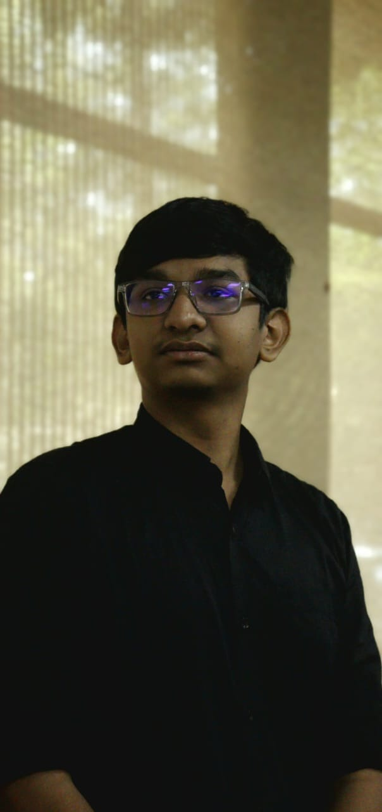
VLK!
In brightest day, In blackest nightNo error shall escape my sight
ARTIFICIAL INTELLIGENCE✳SOFTWARE ENGINEERING✳MACHINE LEARNING✳ARTIFICIAL INTELLIGENCE✳SYSTEMS DESIGN✳SOFTWARE ENGINEERING✳MACHINE LEARNING✳ARTIFICIAL INTELLIGENCE✳
01THE BRIEF
A CLEAR SIGNAL THROUGH THE NOISE
I build systems where everything works together.
This means understanding how components connect—how AI models integrate with APIs, where data flows through a pipeline, how systems perform under load, and which trade-offs matter.
I believe in measuring model performance, building systems that scale, and making informed decisions about accuracy versus latency. Whether designing multi-agent orchestration, optimizing RAG systems, or architecting backend infrastructure, I focus on the complete system.
LET'S BUILD SOMETHING ↗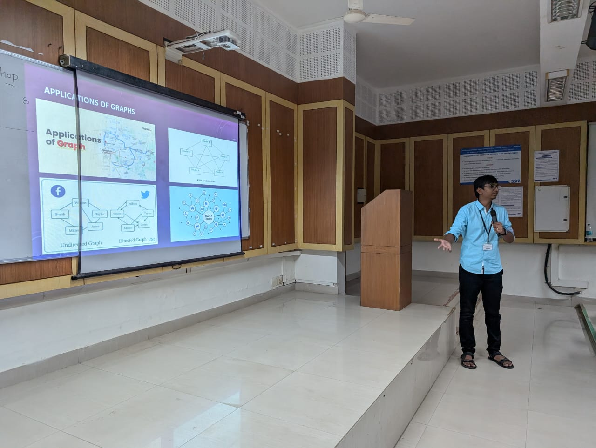
SELECTED ACHIEVEMENTS2025—26
LEETCODE PROBLEMS
SOLVED
RELIANCE FOUNDATION
SCHOLARSHIP
CURRENT CGPA
AT SSNCE
EVENTS ORGANISED
WITH THE TEAM
02SELECTED WORK
Selected work.
Filter by focus area.
AGENT-21 / MULTI-AGENT SIGNAL RESPONSE
21
AI
LIVE
ORDERS
ORDERS
ANOMALY
ALERT
ALERT
NEXT
ACTION
ACTION
Agent-21
A multi-agent system that watches live delivery and revenue signals, makes sense of anomalies, and helps business owners respond.
- Real-time event listeners and anomaly detection
- PII-aware multilingual customer agent
- Executive simulation for competing action plans
MULTI-AGENTREAL-TIMEBUSINESS AI
VIEW PROJECT ↗OWNDB / DURABLE STORAGE VAULT
K/V
08 KBPAGEWAL
OwnDB
A disk-backed key-value store built from the ground up to understand durability below the application layer.
- 8 KB slotted pages and LRU buffer pool
- B+ tree indexing for range scans
- Checksummed WAL and recovery
STORAGE ENGINEB+ TREEWAL
VIEW SOURCE ↗ENDOVISION / ENDOSCOPY IMAGE ANALYSIS
REGION
OF INTEREST
OF INTEREST
PALIGEMMA
2-3B
2-3B
EndoVision
Fine-tuned PaliGemma 2-3B for GI endoscopy questions, taking the work from competition to published proceedings.
- 3rd place globally in Medico 2025 Task 1
- Benchmarked with Accuracy, ROUGE-L, BLEU-4, BERTScore
- Published in MediaEval 2025 workshop proceedings
COMPUTER VISIONRESEARCHMEDICAL AI
PUBLICATION RECORD ↗DEEPFAKE DETECTION / AUTHENTICITY SHIELD
REAL
ALTERED
✓
FRAME ANALYSISVERIFYING
Deepfake Detection
A real-time deepfake detection pipeline that kept working when the hackathon environment did not.
- XceptionNet inference with quantization and pruning
- OpenCV preprocessing and Django backend
- MongoDB metadata with immutable logs
VIDEO AIOPENCVDJANGO
VIEW SOURCE ↗03EXPERIENCE
EXPERIENCE / 2026
Built under
real conditions.
01NOW
2026REMOTE · INDIA
AI Software Engineering Intern
DriveThruData LLP
Worked on document intelligence and healthcare Q&A workflows. Evaluated TrOCR and Qwen2-VL; built across RAG, MCP, OCR, NER, context engineering, and AI workflow automation.
INTERNSHIP WORK ↗04HACKATHONS
Compete & build.
Building fast under pressure, with teammates.
Competition record
HackSymmetric · Agent-21
FINALIST48-hour agentic AI hackathon · CIT
Smart India Hackathon · Top 45
SELECTEDAI-powered train traffic control · SSN internal round
DevsHouse'25 · Top 65
SELECTEDBrowser extension against e-commerce greenwashing · VIT Chennai
PEC Hacks 2.0 · Top 50
FINALISTReal-time deepfake detection · 800+ teams registered
05PUBLICATIONS
Research made real.
One paper from model experiments through to published proceedings.
Visual Question Answering for Gastrointestinal Imaging
EndoVision team · Medical visual question answering
VIEW PUBLICATION RECORD ↗06EDUCATION
Learning, in progress.
Integrated M.Tech · 2023–2028
07LEADERSHIP & ACTIVITIES
Leading with curiosity.
SSN AI Student Chapter
01SSN Coding Club
02SSN AI Student Chapter
0308GALLERY
Out in the world.
Competitions, teams, talks, and the moments between.
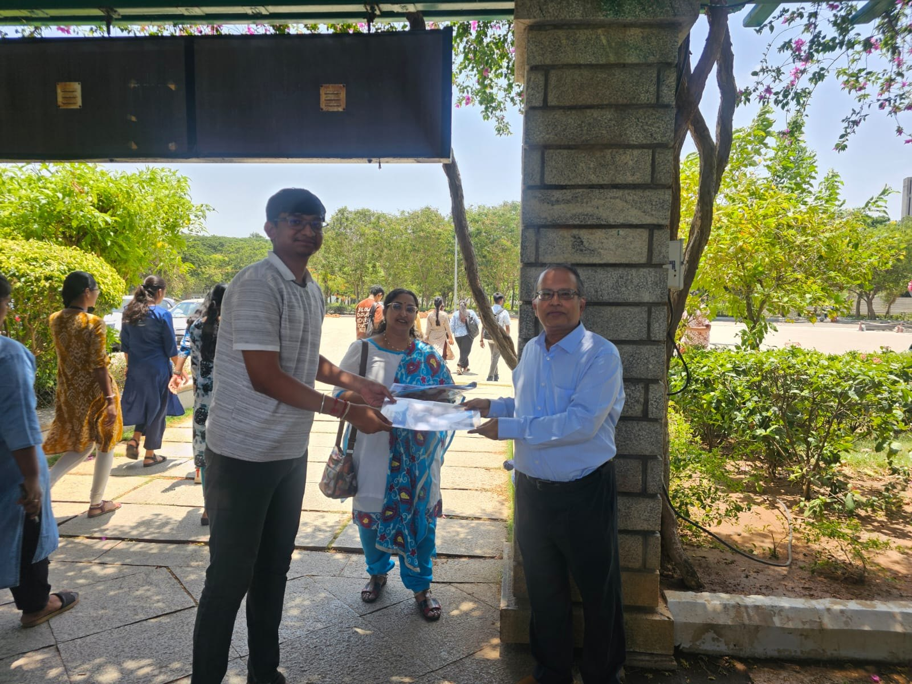
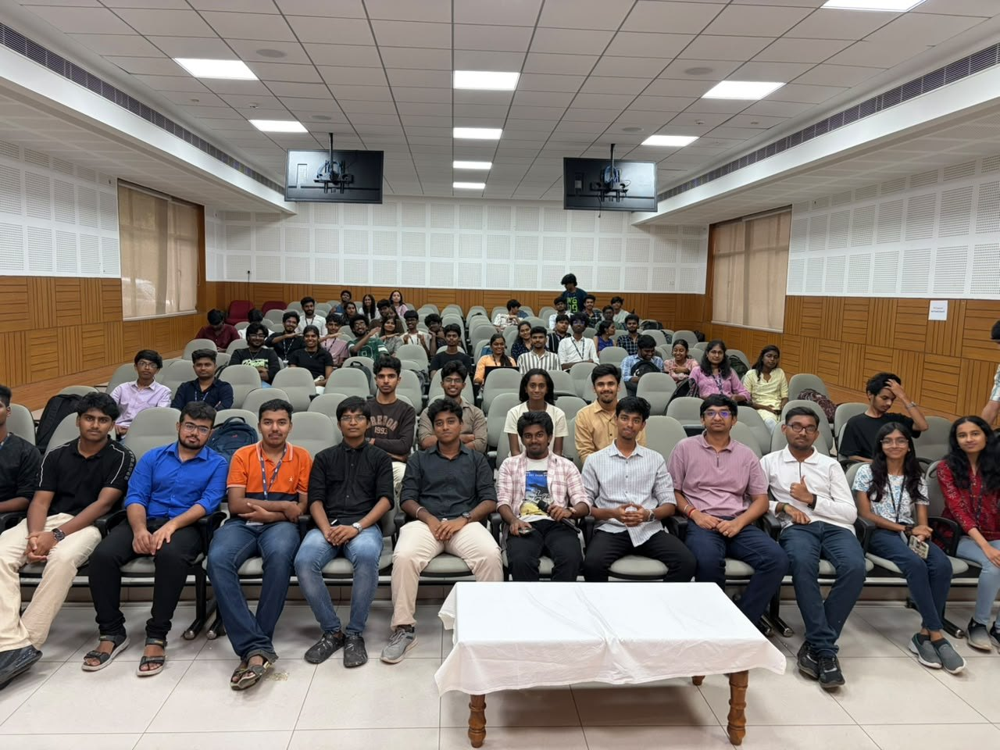
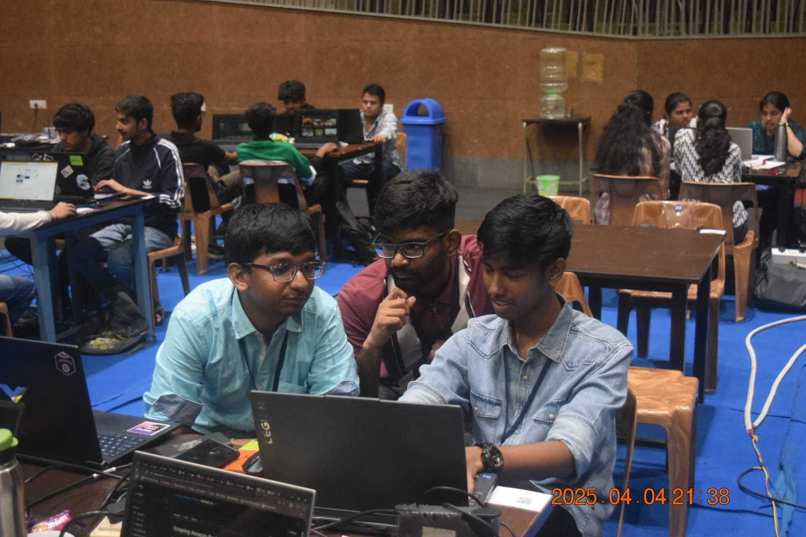
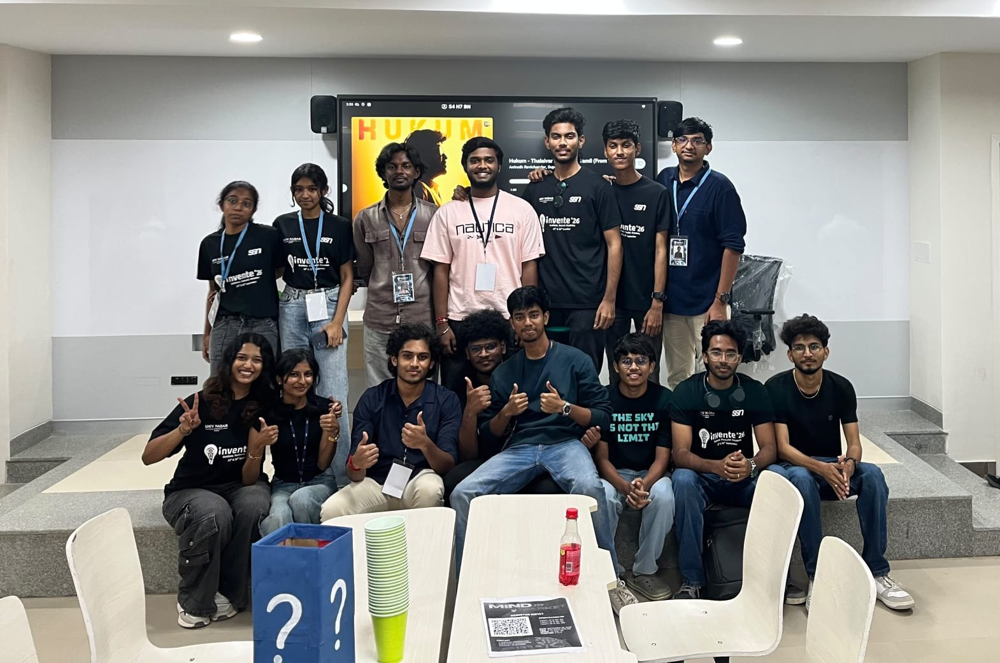
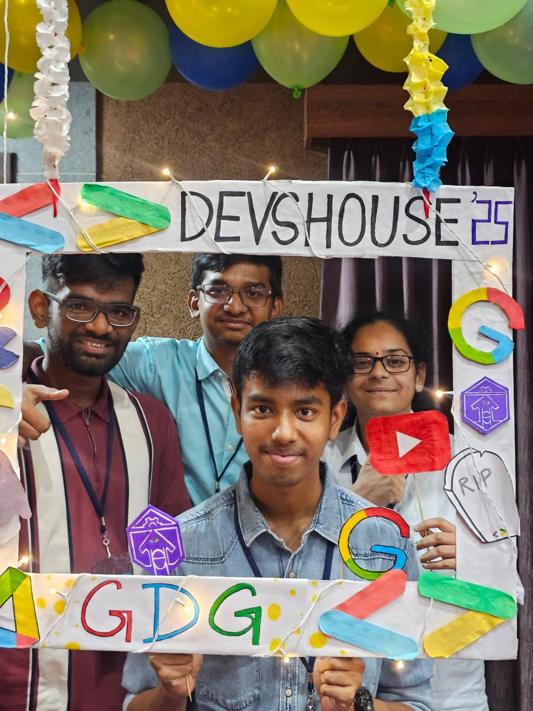
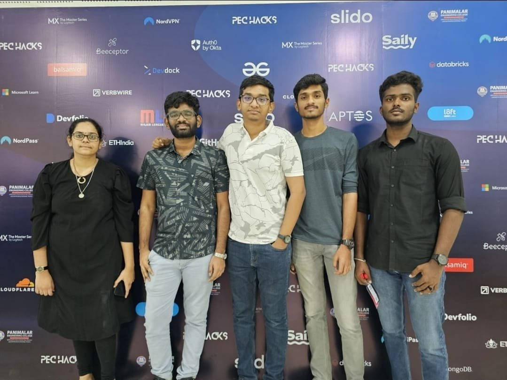
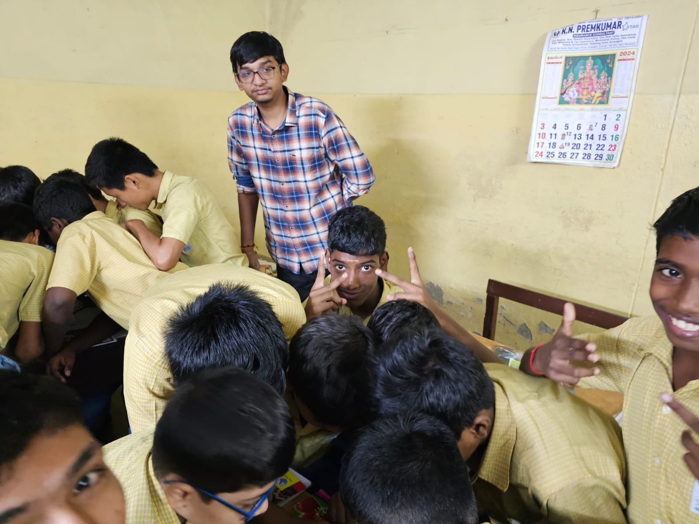
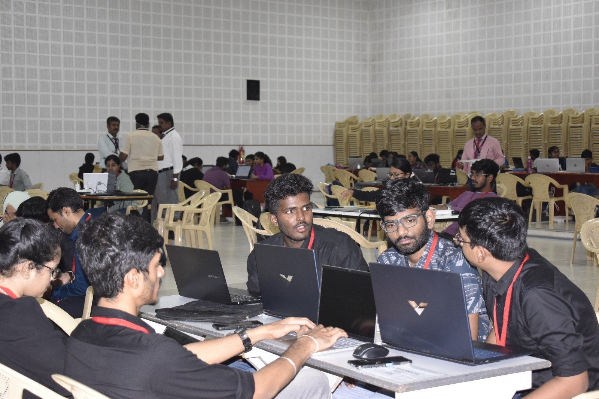
DRAG OR SCROLL TO EXPLORE ↔
09CERTIFICATIONS
Earned certifications.
Proof of focused study across AI, security, and engineering.
Deep Learning
IIT Ropar · Gold Elite · 90% · Top 5%
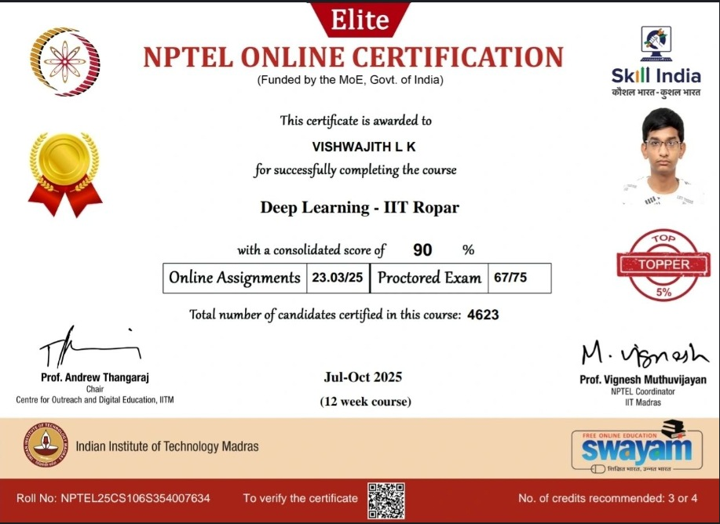
Practical Cybersecurity
IIT Kanpur · Gold Elite · 90%
AI/ML using Python
CDAC Kolkata · 72-hour online course
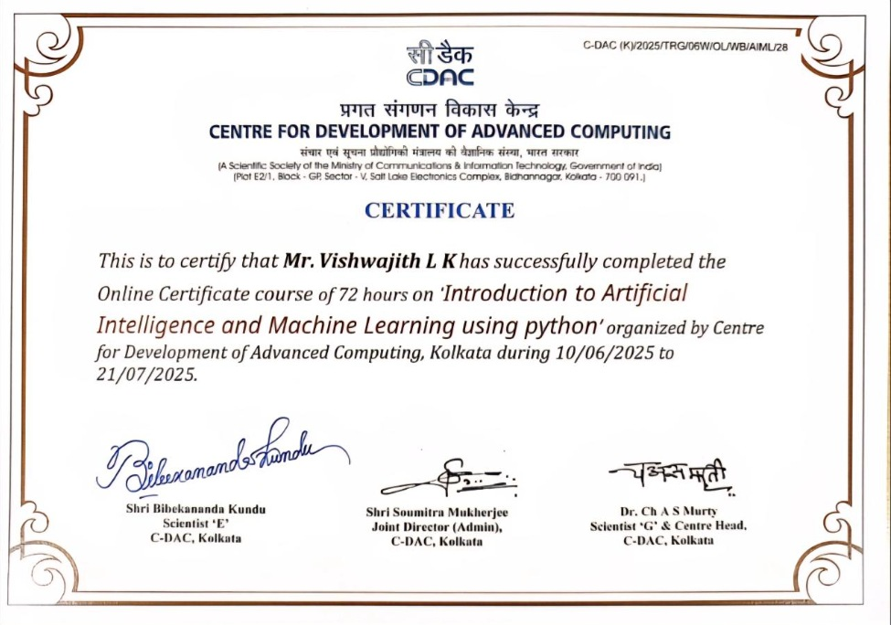
Affective Computing
IIT Madras · Gold Elite · 90%
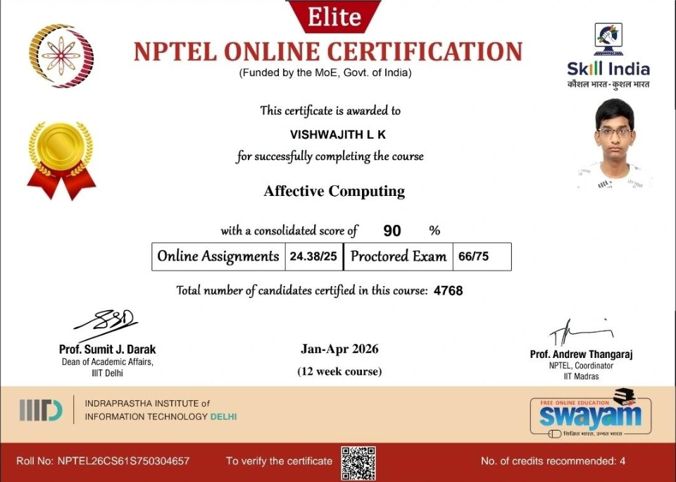
HackSymmetric '26
48-hour national hackathon · Participation
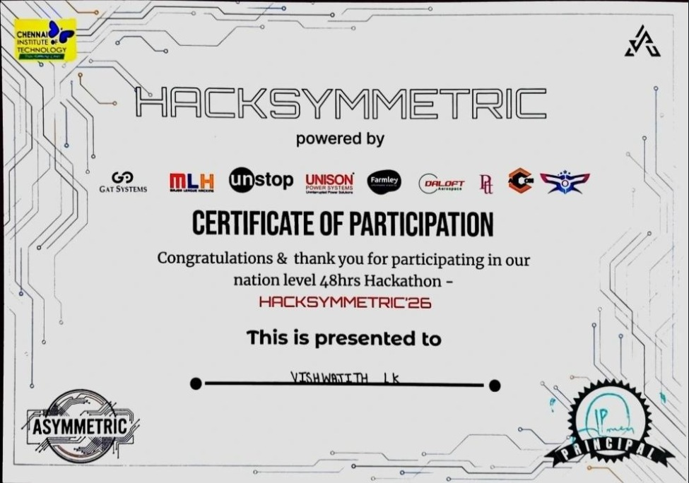
Mobile App Development using Flutter
20-hour value-added course
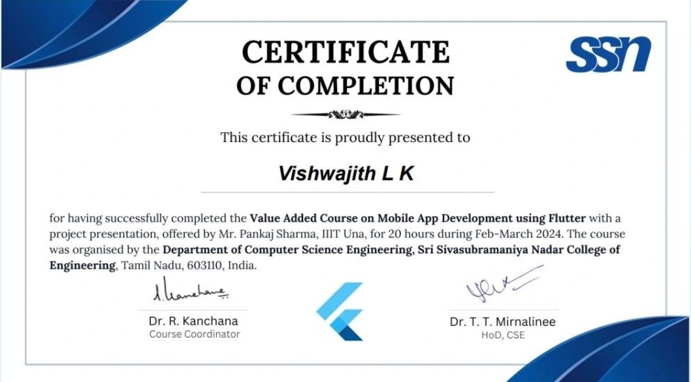